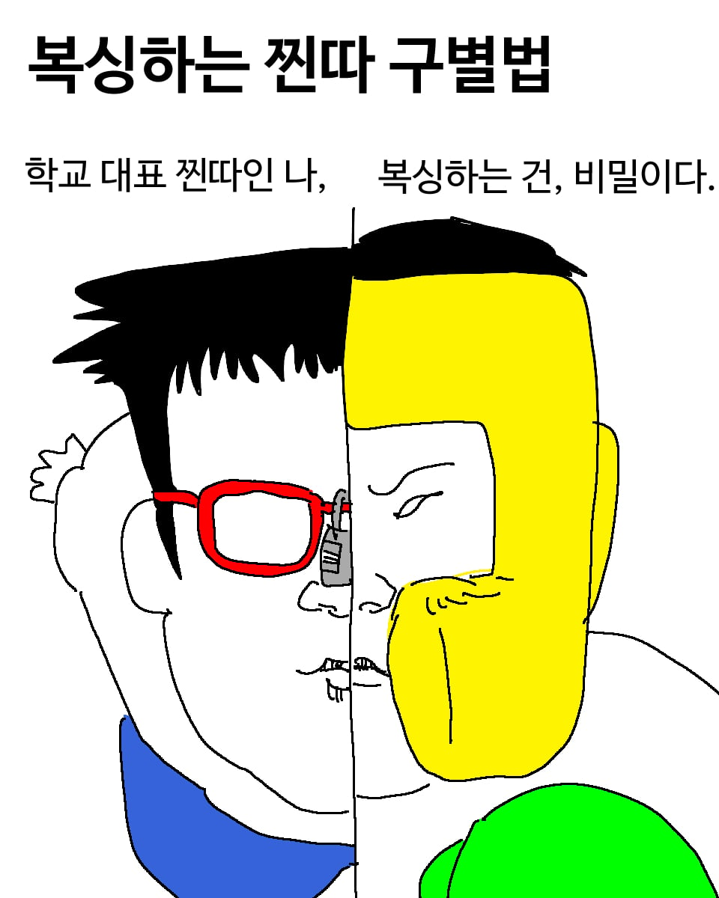
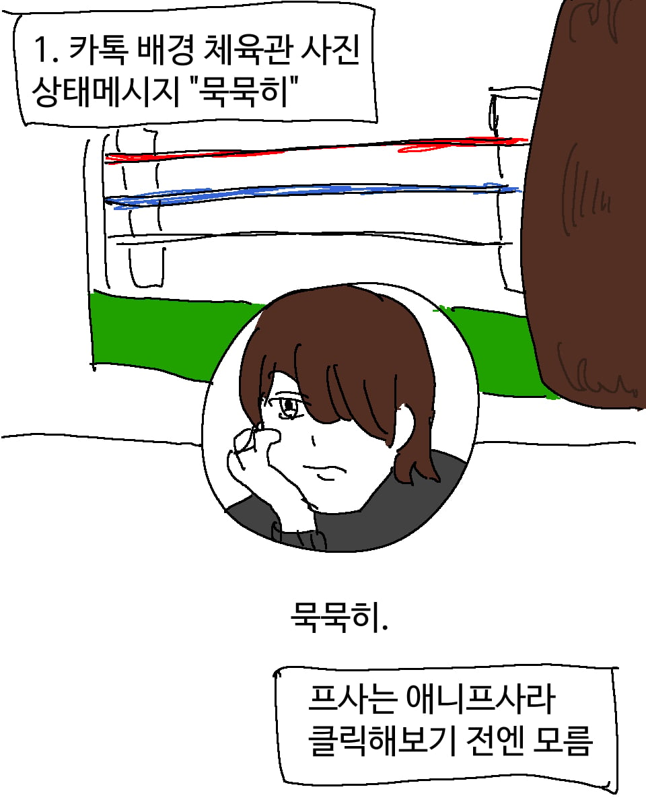
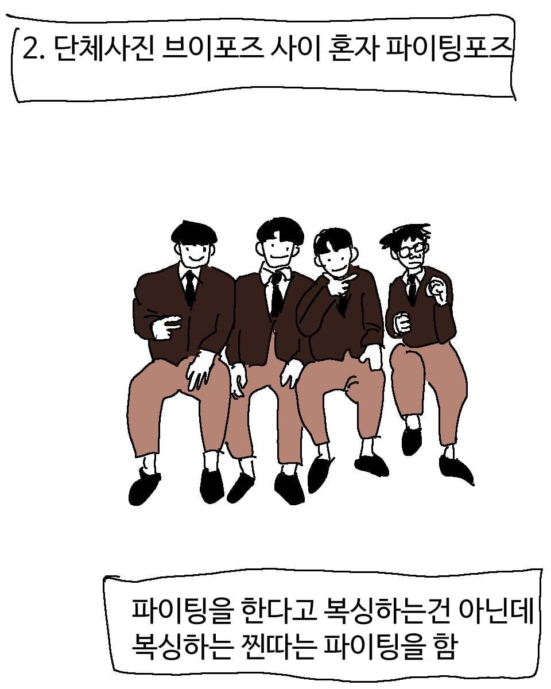
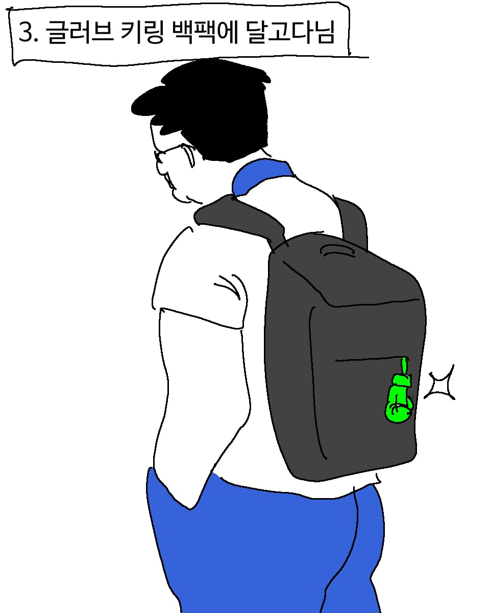
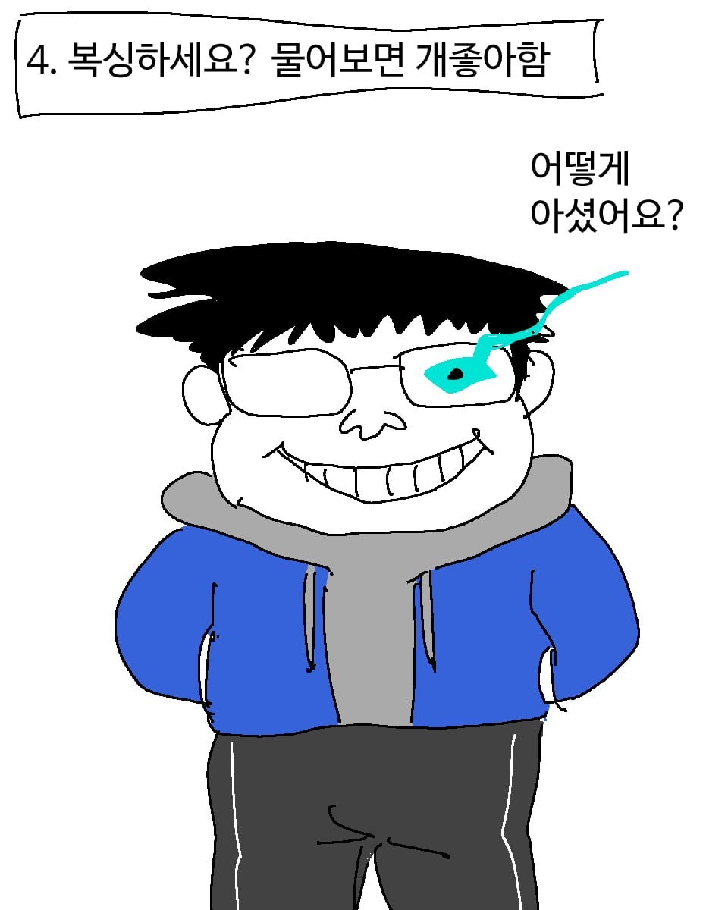
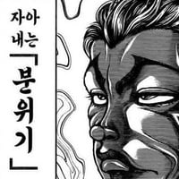
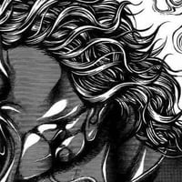
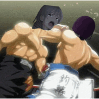

104 · 34 · 8 시간 전 · 원문





사실 은근 티를 흘려서 알아봐주길 기다리는 음침한 나
수집 당시 댓글 34개
씨벌지식정보방 · 9 시간 전
↳ 답글 · 익명
↳ 답글 · 창원시진해구이동거주중 · 4 시간 전
또 사람을 줘팼느냐..
후욱후욱오호혹 · 9 시간 전


dksldh · 8 시간 전
샌즈 연출 훌륭하다
미녀와야스 · 8 시간 전
자작추
btcdcco · 8 시간 전
귀욥
주관적인요정 · 8 시간 전
복싱 꾸준히하면 체질이라는게 바뀝니다
청소하자 · 8 시간 전
귀요미
고싶어 · 8 시간 전
복싱하는데 어케 찐따가 됨? 특히 중고딩이면 운동 좀 하는 걸로 짱 먹을 수 있지 않나?
↳ 답글 · 하우투보링앤스몰 · 8 시간 전
복싱한다고 안쳐맞진 않음
그리고 저런 애들은 스파링 안하거나 몇번 해보고 안함
↳ 답글 · 라치지마 · 8 시간 전
그래도 밴딩 알려주기랑 줄넘기가 기본인데 줄넘기만 꾸준히 했어도 어린나이에 바닥깔아줄 찐따 피지컬은 아닐텐데 ㅋㅋㅋㅋ
↳ 답글 · 망량 · 8 시간 전
저런 애들은 복싱장 안나감, 걍 쇼츠나 서브컬쳐로 접하고 거기에 빠져서 2차 망상하는게 끝임
↳ 답글 · 보추소믈리에 · 8 시간 전
자기가 하고 싶어서 한게 아니라 쳐맞고 다니는거 부모가 눈치채고 강제로 보내는 경우가 많을듯
↳ 답글 · NanoTFT · 8 시간 전
찐따는 성격이야 ㅋㅋ
싸움잘하는 조건 (체격 키 등등) 이라고 해서 딱히 찐따일 확률이 없는게 아님.
정확히 정반대 예시로 그 문신멸치짤 생각해봐
↳ 답글 · etf · 7 시간 전
고딩때 무에타이 하는 친구 있었는데 키작고 애니오타쿠였음 일진놀이 하는 애가 괜히 시비걸었다가 개쳐맞고 그뒤론 아무도 시비 안걸음ㅋㅋ
복싱배웠더니 복싱배운 찐따가 됨
↳ 답글 · 도파민수용체결함 · 7 시간 전
격투기 배운다고 안처맞을거면 승패와 ko는 어떻게 나오고 체급과 등수는 왜 구분하냐. 그라운드랑 달리 복싱을 비롯한 입식타격은 배움 그 자체보다 재능이 더 중요함. 원래 나길 눈좋고 잘치는 인간으로 태어난 놈이 엘리트 체육한게 아니라 어줍잖게한놈은 그냥 개팸.
↳ 답글 · 콩콩이콩 · 5 시간 전
격투기 배워도 맞을 수 있다는 거랑 배워도 소용없다는 건 전혀 다른 얘기임
승패랑 ko가 존재하는 건 같은 격투기를 배운 사람들 사이에서도 실력 차이가 있기 때문이지
배운 사람과 안 배운 사람의 차이가 없다는 뜻이 아님
애초에 격투기를 배우는 건 무적이 되려는 게 아니라 안 배운 사람보다 기술과 대응 능력을 키우려는 거임
배워도 질 수 있다는 사실이 배워도 차이가 없다는 근거는 될 수 없음
니의견이 맞는걸 본건 일반인남성 vs 여성복서
예전에 지역구 쌈짱 vs 격투선수 이런 컨텐츠도 있는듯
흑심품은흑마술사 · 8 시간 전
아라라기ㅋㅋ
Jtac · 8 시간 전
샌즈 되버리네
초코마시쩡 · 8 시간 전

IlIIIllIl · 8 시간 전
글러브 키링 나도 있는뎈ㅋㅋㅋㅋㅋㅋㅋ 찔리네
래기피무 · 7 시간 전
용찬우인가
대한민국육군부사관 · 7 시간 전
씹 딱 나네
발로그림 · 7 시간 전
대충 복싱장에 보면 1년 이상 하는 사람은 열명 중에 3명 정도임.
한 3개월차는 이제 폼 좀 나고 체력도 늘고 자신감이 오름.
딱 저 만화의 찐따군이랄까?
그러다가 이제 관장님이 슬슬 애 기좀 죽여볼까 해서 스파링 좀 시키고 자기보다 훨씬 잘하는 사람에게 맞고 그러면 겸손해짐.
그렇게 꾸준히만 하면 3년 정도하면 싸움같은 건 모르겠고 사회생활하는 데에 도움이 많이 됨.
사람 대할 때 자신감도 있고 겸손할 줄도 아니까..
새로운 일을 배우거나 시작할 때 도전적인 마인드로 하니까 실패도 적고 실패해도 재도전하는 그런 근성도 생기고..
↳ 답글 · underdog · 6 시간 전
식당에 붙어있는거같네 "복싱의 효능"
아무것도아닌 · 7 시간 전
와!!!!!!!!!!
난코박고죽음을택하겠다 · 7 시간 전
이거 완전 더파이팅 일보..
카드키찾음 · 7 시간 전
나도 다 늙었지만 복싱 배우고싶당,,, 다이어트도 할겸
↳ 답글 · 고기사마 · 6 시간 전
늙으면 무릎하고 허리때문에 불가능해요~ ~ 우리 관절은 소모품이고 소중하다구요~
고기사마 · 5 시간 전
사실 찐다는 싸움 잘하고 못하고가 아니라 .. 사회에 잘적응하고 사람들과 원만하게 지낼수 있냐 없냐지 ..
이젠 싸움 잘한 찐따가 되버림 그래도 싸움못한 찐다보단 좋음 ㅋ
게이트 · 2 시간 전
진짜 찐따는 가라테하더라
삼진그룹영어토익반 · 2 시간 전
와!
댓글
수집 당시 댓글 34개
씨벌지식정보방 · 9 시간 전
· 익명
· 창원시진해구이동거주중 · 4 시간 전
또 사람을 줘팼느냐..
후욱후욱오호혹 · 9 시간 전


dksldh · 8 시간 전
샌즈 연출 훌륭하다
미녀와야스 · 8 시간 전
자작추
btcdcco · 8 시간 전
귀욥
주관적인요정 · 8 시간 전
복싱 꾸준히하면 체질이라는게 바뀝니다
청소하자 · 8 시간 전
귀요미
고싶어 · 8 시간 전
복싱하는데 어케 찐따가 됨? 특히 중고딩이면 운동 좀 하는 걸로 짱 먹을 수 있지 않나?
· 하우투보링앤스몰 · 8 시간 전
복싱한다고 안쳐맞진 않음
그리고 저런 애들은 스파링 안하거나 몇번 해보고 안함
· 라치지마 · 8 시간 전
그래도 밴딩 알려주기랑 줄넘기가 기본인데 줄넘기만 꾸준히 했어도 어린나이에 바닥깔아줄 찐따 피지컬은 아닐텐데 ㅋㅋㅋㅋ
· 망량 · 8 시간 전
저런 애들은 복싱장 안나감, 걍 쇼츠나 서브컬쳐로 접하고 거기에 빠져서 2차 망상하는게 끝임
· 보추소믈리에 · 8 시간 전
자기가 하고 싶어서 한게 아니라 쳐맞고 다니는거 부모가 눈치채고 강제로 보내는 경우가 많을듯
· NanoTFT · 8 시간 전
찐따는 성격이야 ㅋㅋ
싸움잘하는 조건 (체격 키 등등) 이라고 해서 딱히 찐따일 확률이 없는게 아님.
정확히 정반대 예시로 그 문신멸치짤 생각해봐
· etf · 7 시간 전
고딩때 무에타이 하는 친구 있었는데 키작고 애니오타쿠였음 일진놀이 하는 애가 괜히 시비걸었다가 개쳐맞고 그뒤론 아무도 시비 안걸음ㅋㅋ
· 익명
복싱배웠더니 복싱배운 찐따가 됨
· 도파민수용체결함 · 7 시간 전
격투기 배운다고 안처맞을거면 승패와 ko는 어떻게 나오고 체급과 등수는 왜 구분하냐. 그라운드랑 달리 복싱을 비롯한 입식타격은 배움 그 자체보다 재능이 더 중요함. 원래 나길 눈좋고 잘치는 인간으로 태어난 놈이 엘리트 체육한게 아니라 어줍잖게한놈은 그냥 개팸.
· 콩콩이콩 · 5 시간 전
격투기 배워도 맞을 수 있다는 거랑 배워도 소용없다는 건 전혀 다른 얘기임
승패랑 ko가 존재하는 건 같은 격투기를 배운 사람들 사이에서도 실력 차이가 있기 때문이지
배운 사람과 안 배운 사람의 차이가 없다는 뜻이 아님
애초에 격투기를 배우는 건 무적이 되려는 게 아니라 안 배운 사람보다 기술과 대응 능력을 키우려는 거임
배워도 질 수 있다는 사실이 배워도 차이가 없다는 근거는 될 수 없음
니의견이 맞는걸 본건 일반인남성 vs 여성복서
예전에 지역구 쌈짱 vs 격투선수 이런 컨텐츠도 있는듯
흑심품은흑마술사 · 8 시간 전
아라라기ㅋㅋ
Jtac · 8 시간 전
샌즈 되버리네
초코마시쩡 · 8 시간 전

IlIIIllIl · 8 시간 전
글러브 키링 나도 있는뎈ㅋㅋㅋㅋㅋㅋㅋ 찔리네
래기피무 · 7 시간 전
용찬우인가
대한민국육군부사관 · 7 시간 전
씹 딱 나네
발로그림 · 7 시간 전
대충 복싱장에 보면 1년 이상 하는 사람은 열명 중에 3명 정도임.
한 3개월차는 이제 폼 좀 나고 체력도 늘고 자신감이 오름.
딱 저 만화의 찐따군이랄까?
그러다가 이제 관장님이 슬슬 애 기좀 죽여볼까 해서 스파링 좀 시키고 자기보다 훨씬 잘하는 사람에게 맞고 그러면 겸손해짐.
그렇게 꾸준히만 하면 3년 정도하면 싸움같은 건 모르겠고 사회생활하는 데에 도움이 많이 됨.
사람 대할 때 자신감도 있고 겸손할 줄도 아니까..
새로운 일을 배우거나 시작할 때 도전적인 마인드로 하니까 실패도 적고 실패해도 재도전하는 그런 근성도 생기고..
· underdog · 6 시간 전
식당에 붙어있는거같네 "복싱의 효능"
아무것도아닌 · 7 시간 전
와!!!!!!!!!!
난코박고죽음을택하겠다 · 7 시간 전
이거 완전 더파이팅 일보..
카드키찾음 · 7 시간 전
나도 다 늙었지만 복싱 배우고싶당,,, 다이어트도 할겸
· 고기사마 · 6 시간 전
늙으면 무릎하고 허리때문에 불가능해요~ ~ 우리 관절은 소모품이고 소중하다구요~
고기사마 · 5 시간 전
사실 찐다는 싸움 잘하고 못하고가 아니라 .. 사회에 잘적응하고 사람들과 원만하게 지낼수 있냐 없냐지 ..
이젠 싸움 잘한 찐따가 되버림 그래도 싸움못한 찐다보단 좋음 ㅋ
게이트 · 2 시간 전
진짜 찐따는 가라테하더라
삼진그룹영어토익반 · 2 시간 전
와!